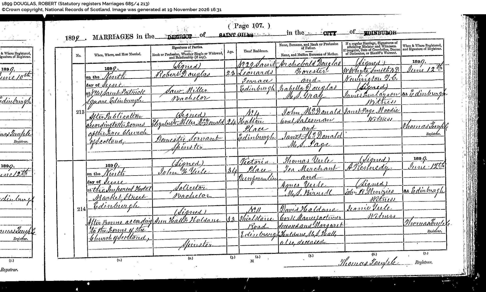

Item 6 · June 9, 1899
Marriage registration: Robert Douglas and Elizabeth Miller McDonald
The document

Tap an image to open it full size.
Transcription, word for word
Everything as written, including misspellings. [?] marks an uncertain reading. Struck-through words are marked as struck through. Notes in square brackets describe the page and are not part of it.
[Printed header] 1899 DOUGLAS, ROBERT (Statutory registers Marriages 685/4 213) [Printed] ©Crown copyright, National Records of Scotland. Image was generated at 19 November 2026 16:31 ( Page 107. ) 1899. MARRIAGES in the DISTRICT of SAINT GILES in the CITY of EDINBURGH [Column headings, printed] No. | When, Where, and How Married. | Signatures of Parties. Rank or Profession, Whether Single or Widowed, and Relationship (if any). | Age. | Usual Residence. | Name, Surname, and Rank or Profession of Father. Name, and Maiden Surname of Mother. | If a regular Marriage, Signatures of officiating Minister and Witnesses. If irregular, Date of Conviction, Decree of Declarator, or Sheriff's Warrant. | When & Where Registered, and Signature of Registrar. No. 213 When/where/how: 1899. on the Ninth day of June at No 34 Saint Patrick Square Edinburgh. After Publication according to the Forms of the Free Church of Scotland, Parties: (Signed) Robert Douglas, Saw Miller, Bachelor, 23, No 29 Saint Leonards Terrace Edinburgh. (Signed) Elizabeth Miller McDonald, Domestic Servant, Spinster, 24, No 4 Hatton Place Edinburgh Fathers/Mothers: Archibald Douglas Forester and Isabella Douglas M.S. Gray. John McDonald Coal Salesman and Janet McDonald M.S. Page Minister/witnesses: (Signed) W Whyte Smith B.D. Newington F.C. (Signed) James Finlayson Witness. Janet Page Moodie Witness Registered: 1899. June 12th At Edinburgh Thomas Temple Registrar. No. 214 When/where/how: 1899. on the Ninth day of June at the Imperial Hotel Market Street Edinburgh. After Banns according to the Forms of the Church of Scotland, Parties: (Signed) John F Yule, Solicitor, Bachelor, 34, Victoria Place Dunfermline. (Signed) Ann Hall[?] Haldane, Spinster, 33, No 11 Thirlstane Road Edinburgh Fathers/Mothers: Thomas Yule Tea Merchant and Agnes Yule M.S. Birrell. David Haldane Cork Manufacturer deceased and Margaret Haldane M.S. Hall, also, deceased Minister/witnesses: (Signed) A Kennedy. (Signed) John R Menzies Witness. Jeanie Yule Witness Registered: 1899. June 12th At Edinburgh Thomas Temple Registrar. [Signature] Thomas Temple Registrar. [Left edge: part of the facing page, "1899", "June 10th", "Edinburgh", "Thomas Temple Registrar", cut off]